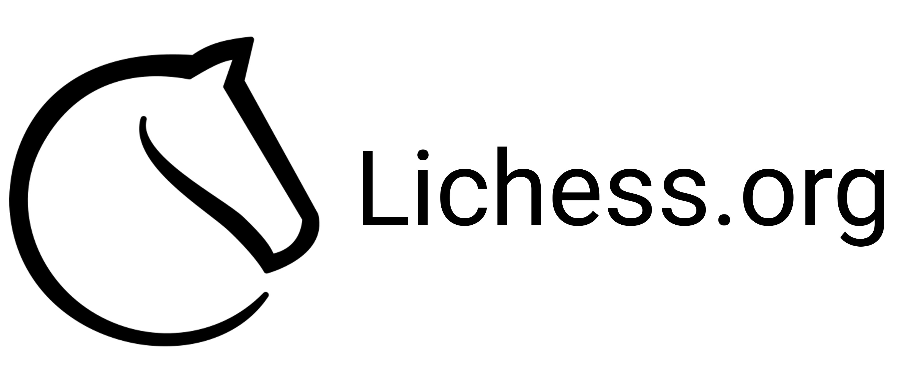
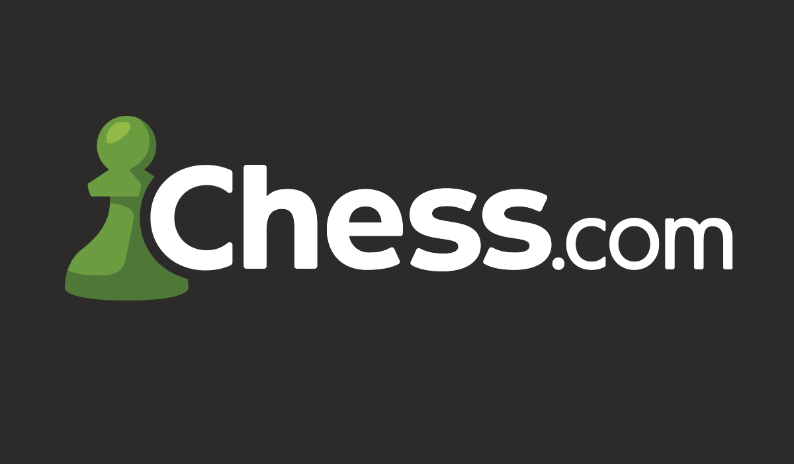
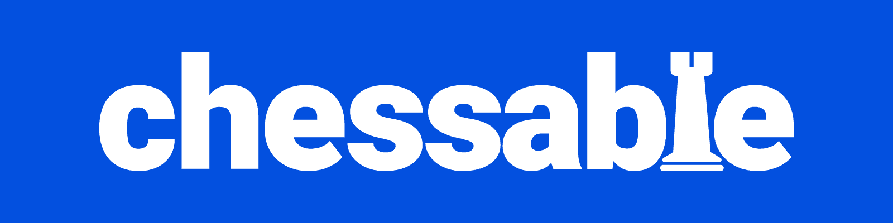
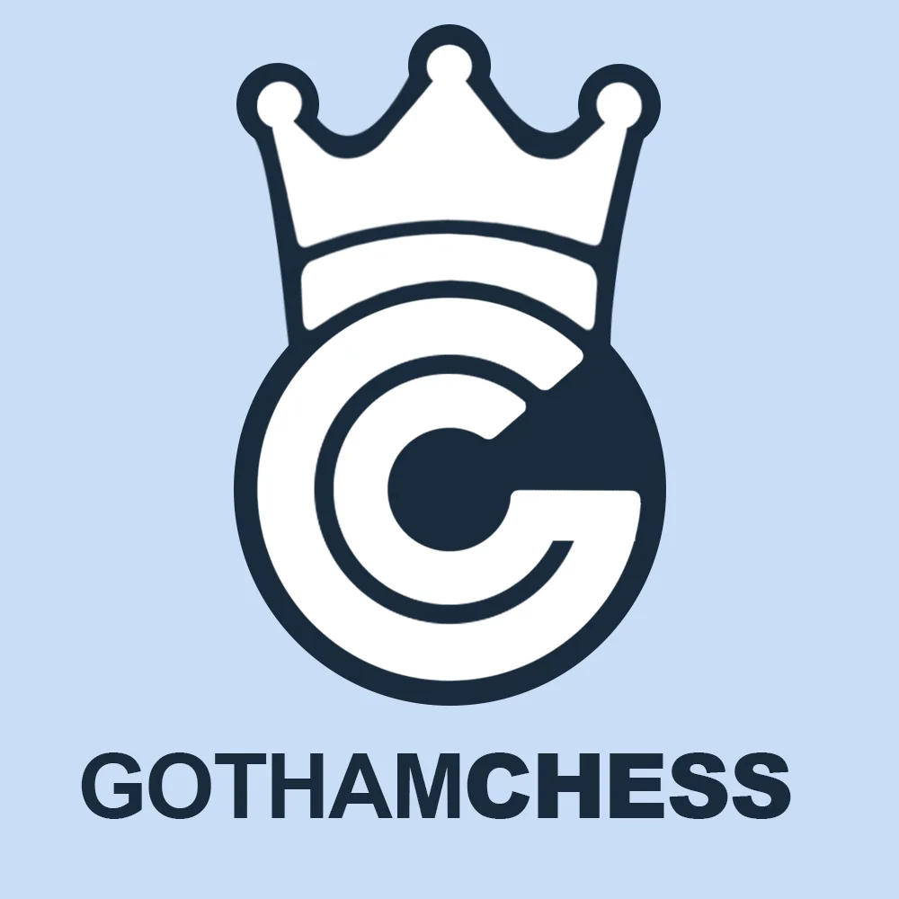
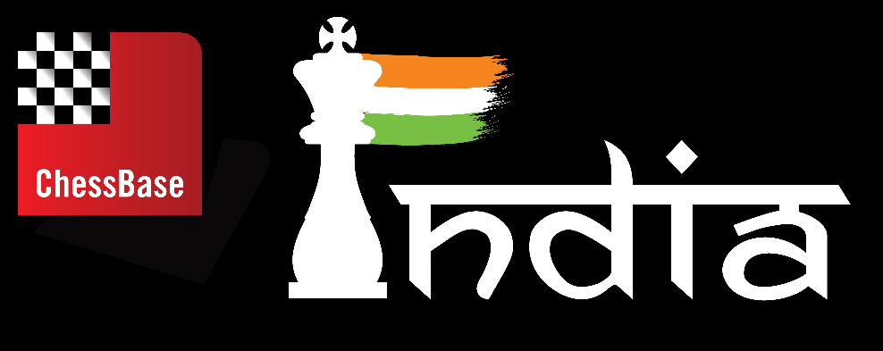

Learning chess is not that easy but there are lots of ways to learn it easily. There are so many websites that helps you to learn chess and there are millions of videos about chess on Youtube. I will give you guys some websites and YT channels I personally perfer to use.

Lichess is a free online chess platform where you can play against people worldwide, solve puzzles, and improve your skills. It has no ads or paywalls, making it perfect for both beginners and experienced players.

Chess.com is the most popular online chess platform where you can play games, solve puzzles, and learn strategies. It offers lessons, tournaments, and analysis tools to help beginners and advanced players improve their skills.

Chessable is an online chess learning platform that helps players improve through interactive courses and spaced repetition training. It focuses on openings, tactics, and endgames, allowing users to study, practice, and remember chess concepts more effectively.

GothamChess is a popular YouTube channel run by International Master Levy Rozman, where he teaches chess through entertaining lessons, game analysis, and fun series like Guess the Elo. It helps beginners and advanced players improve while staying engaging and easy to follow.

ChessBase India is a popular YouTube channel that shares chess news, game analysis, interviews, and live tournament coverage. It features top players, educational content, and entertaining commentary, helping grow and promote chess worldwide.
Chess can also be learned and improved through clubs, books, and trainers. These are for those who are looking to develop seriously on chess. Chess clubs provide a space to practice regularly, play with others, and take part in competitions. Books help players understand strategies, tactics, and endgames in more detail, starting from beginner level and moving to advanced ideas. Trainers, whether online or in person, guide players step by step, helping them fix mistakes and improve their thinking. Using all of these tools together makes learning chess faster and more effective.